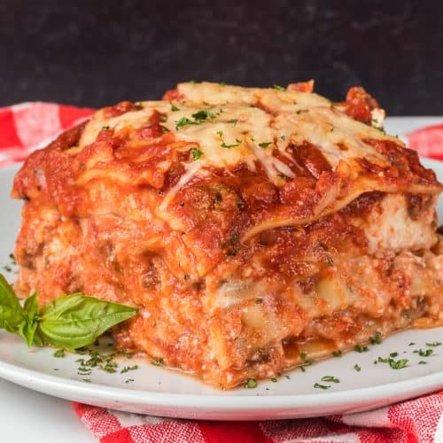

Lasagna

Description
Lasagna is a type of flat pasta, typically made from an unleavened dough of wheat flour mixed with water or eggs, and formed into sheets or other shapes, then baked.
Ingredients
- 1 pound lasagna noodles
- 1 pound ground beef
- 1 pound Italian sausage
- 1 1/2 cups shredded Mozzarella cheese
- 1 1/2 cups shredded Fontina cheese
- 1 tablespoon minced garlic
- 1 tablespoon dried oregano
- 1 teaspoon dried rosemary
- 1 teaspoon salt
- 1/2 teaspoon ground black pepper
- 1 cup shredded Parmesan cheese
Steps
- Make the meat sauce.
- Cook the noodles.
- Make the ricotta mixture.
- Layer the lasagna according to the recipe instructions.
- Cover with foil and bake.
- Let the lasagna rest before serving.